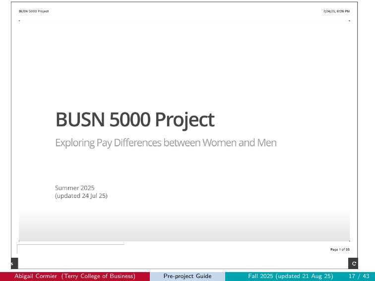
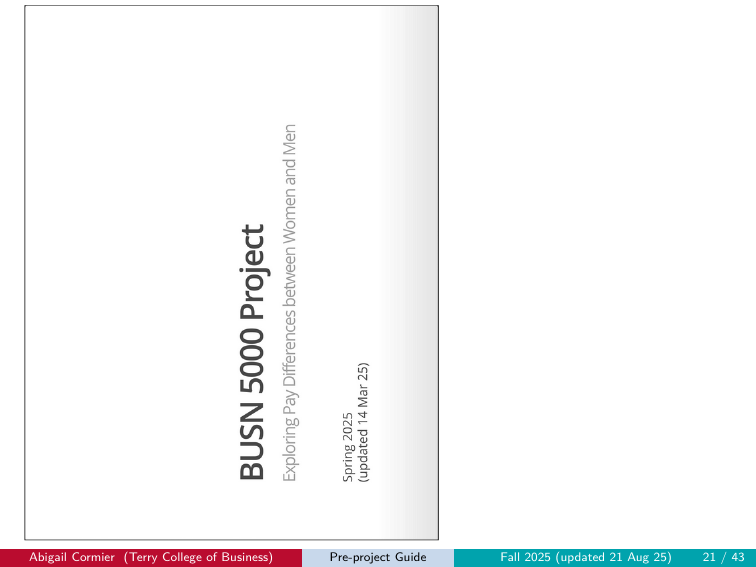
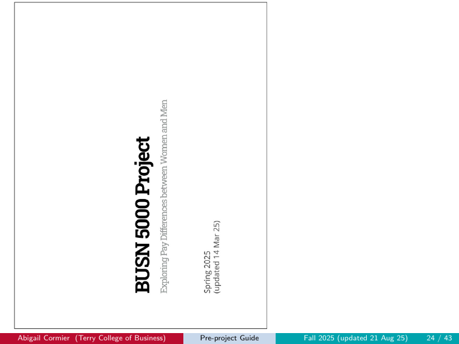
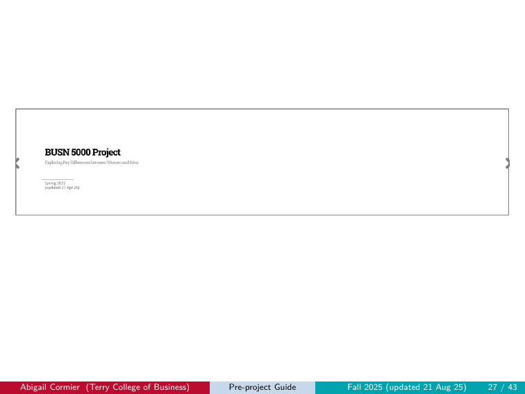
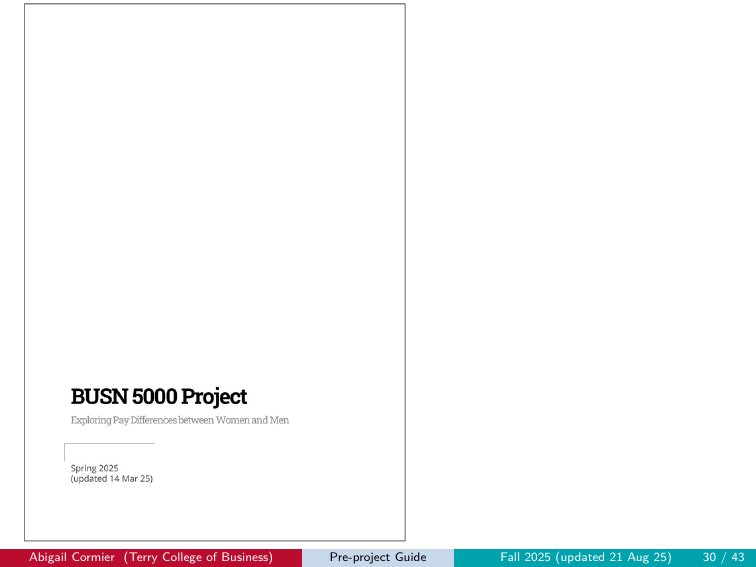
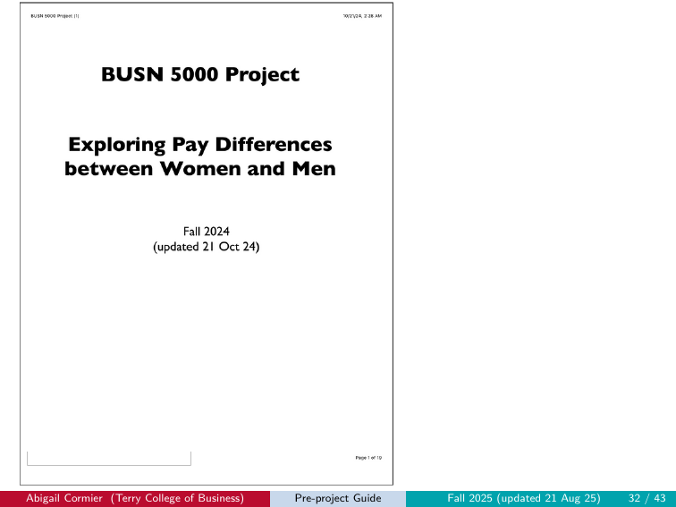
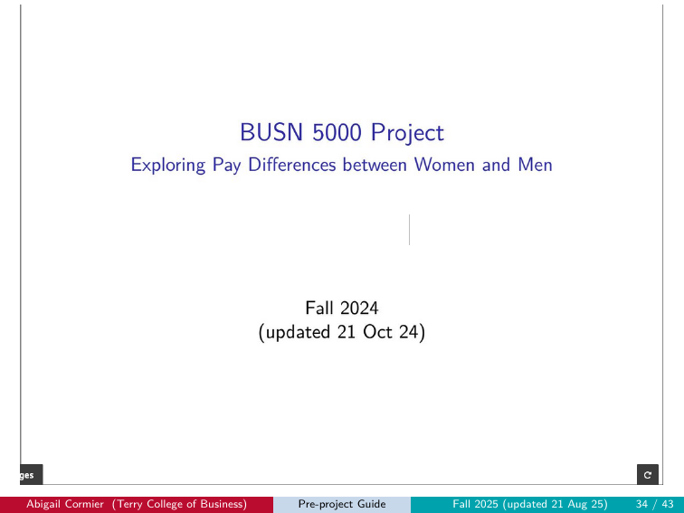
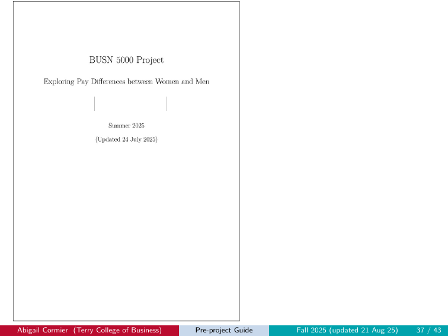
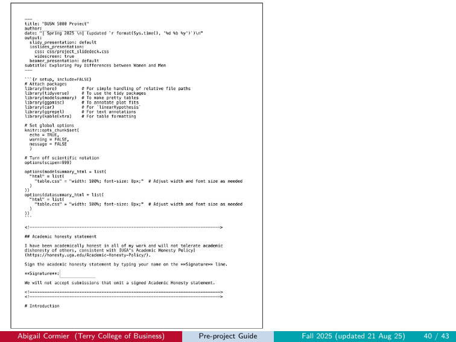
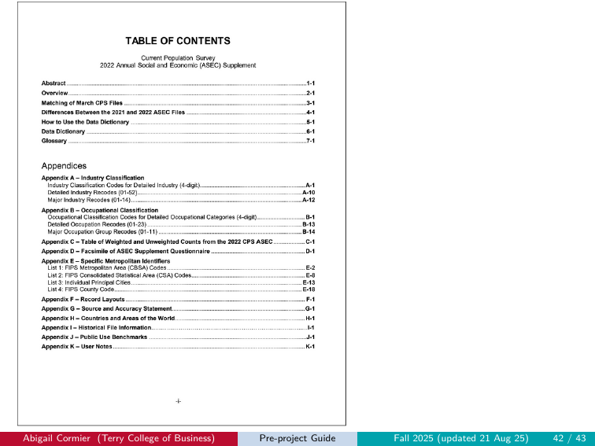

6 Common Errors
Here we catalog the most common errors we’ve seen students make. If you are having problems, you will likely find it documented here, along with the cause and fix. If your problem persists, reach out to the TAL or a member of the teaching team.
6.1 Setup errors
6.1.1 CSS not loading
Symptom: Your knitted slides have no UGA styling — plain text, no colors, default fonts.
Cause: Either (a) project_slidedeck.css is anywhere other than Project/css/, or (b) the .Rmd file you’re knitting isn’t in your Project/ root (e.g., you left it in your Downloads folder), so the relative path css/project_slidedeck.css in the Rmd’s YAML can’t find the CSS.
Fix: Confirm both files are in the right places: the CSS in Project/css/ AND the .Rmd in your Project/ root. Open RStudio by double-clicking Project.Rproj, then re-knit. Visual example of what the bad output looks like: Wrong CSS.
6.1.2 Working from your Downloads folder
Symptom: “File not found” errors when running scripts or knitting. R can’t see your data files even though they exist.
Cause: RStudio’s working directory is your Downloads folder, not your Project/ folder. The here() paths in scripts and the Rmd resolve to the wrong place.
Fix: Move all files into Project/ and always open RStudio by double-clicking Project.Rproj. Never work from Downloads.
6.1.3 Required files missing or in the wrong subfolder
Symptom: “Cannot open the connection” or “object not found” errors during a script run or knit.
Cause: A required file isn’t where the script or Rmd expects it (e.g., LF.R is in your project root instead of r/, or pppub24.csv is missing from data/).
Fix: Run check_setup_preproject.R (pre-project) or check_setup_project.R (main project). The script tells you exactly which file is misplaced and where it should go.
6.2 Workflow errors
6.2.1 Knitting before running the R script
Symptom: Knit errors out with a “file not found” message pointing at out/LF.csv or data/cpsmar_e.csv.
Cause: You haven’t run LF.R (pre-project) or cpsmar_e.R (main project) yet, so the file the Rmd is trying to read doesn’t exist.
Fix: Run the relevant R script first (open it in the editor, Select All, click Run), then knit the Rmd.
6.2.2 Variable name confusion
Symptom: Knit errors out mid-document with “object not found” — a chunk references cpsmar_a but you defined cpsmar_e (or similar).
Cause: Typo or misalignment between chunks. You defined the analysis sample with one name, then referenced a different name in a downstream chunk.
Fix: Read each chunk carefully. Match data-frame names exactly across chunks. The variable structure in the template is: cpsmar_e (the extract) → cpsmar_a (the analysis sample) → singles (the singles subset).
6.2.3 Touching the setup chunk
Symptom: Output looks broken or knit fails in unexpected ways (missing libraries, scientific notation issues, formatting wrong).
Cause: You changed include = FALSE to include = TRUE on the setup chunk, or otherwise modified the setup chunk’s contents.
Fix: Restore the setup chunk to its original state. The eval = FALSE → TRUE toggle only applies to content code chunks (btl1, btl2, mi1, etc.), never the setup chunk.
6.3 Rendering errors (the knit step)
6.3.1 Leaving eval = FALSE on a completed chunk
Symptom: Your code is correct but the output doesn’t appear in the knitted slide. The chunk shows the code but no result below it.
Cause: The chunk option eval = FALSE is still set. R Markdown displays the code but skips running it during knit.
Fix: Change eval = FALSE to eval = TRUE on every content chunk you’ve completed. Re-knit.
6.4 Output format errors
These are the canonical “submission rejected” failure modes, each shown with a real example from a prior submission. If your output matches any of these images, your submission will receive a 0.
6.4.1 Wrong CSS
Symptom: Output is in landscape but has no UGA styling — plain text, gray gradients, default browser fonts.
Cause: project_slidedeck.css was not found at knit time (usually because it’s not in Project/css/).
Fix: Verify the CSS file is in Project/css/. Verify the Rmd you are working on is in Project/, not somewhere else (like Downloads/). Re-knit.

6.4.2 Wrong CSS + wrong orientation
Symptom: Output is portrait AND has no UGA styling.
Cause: Both CSS is missing and the print dialog saved as portrait.
Fix: Move CSS to Project/css/. Verify the Rmd you are working on is in Project/, not somewhere else (like Downloads/). Re-knit, then save with Landscape orientation.

6.4.3 Wrong orientation
Symptom: Correct UGA styling, but the PDF is portrait.
Cause: Print dialog defaulted to portrait and you didn’t change it.
Fix: In the browser’s print dialog, set Layout / Orientation to Landscape before saving.

6.4.4 Long landscape
Symptom: Landscape PDF, but the slide content is stretched horizontally across a single very wide page instead of broken into separate slide pages.
Cause: A print dialog scaling setting fit multiple slides onto one wide page.
Fix: Reset print dialog scaling to default. Make sure Pages per sheet = 1.

6.4.5 Portrait
Symptom: Output is portrait. (Same as “Wrong orientation” above, isolated here as an example.)
Cause: Print dialog defaulted to portrait.
Fix: Set Layout to Landscape.

6.4.6 Portrait + wrong CSS
Symptom: Output is portrait AND has no UGA styling. Same underlying causes as the “Wrong CSS + wrong orientation” case, isolated here as a distinct example pattern.
Fix: Move CSS to Project/css/. Verify the Rmd you are working on is in Project/, not somewhere else (like Downloads/). Re-knit, then save with Landscape orientation.

6.4.7 LaTeX slides (knit-to-PDF, slide format)
Symptom: Output is a slide deck rendered with LaTeX/Beamer styling — different fonts, different layout, no UGA brand colors.
Cause: You used the Knit dropdown to select “Knit to PDF” with slide output, overriding the Rmd’s HTML-based ioslides format.
Fix: Use the Knit button (not the dropdown). The Rmd’s YAML specifies ioslides_presentation for a reason. If your YAML has also been modified (which often goes hand-in-hand with this error), restore it by following the 6-step process under Editing the YAML beyond the author line. Then re-knit.

6.4.8 LaTeX document (knit-to-PDF, document format)
Symptom: Output is a regular PDF document, not a slide deck at all. Looks like a paper or article.
Cause: You used the Knit dropdown to select “Knit to PDF” with document output, AND likely modified the YAML to change the output format.
Fix: Restore the YAML. Knit with the button. Save as PDF from the HTML output.

6.4.9 Not knit
Symptom: Submission is the raw .Rmd file, or a file that was never actually knit — no rendering at all.
Cause: You uploaded the wrong file (the .Rmd source instead of the saved-as-PDF output).
Fix: Knit the Rmd to HTML, save the HTML as PDF using your browser’s print dialog, then upload that PDF.

6.4.10 Wrong file
Symptom: Submission is something other than the intended project artifact — an old version, a template, an unrelated document.
Cause: You uploaded the wrong file.
Fix: Locate the correct PDF in your Project/ folder and re-upload. Double-check the filename matches the convention.

6.5 Content errors
6.5.1 Numbers in your paragraph don’t match LF.csv (pre-project)
Symptom: Your slide 3 paragraph cites numbers that don’t reflect your own data — they came from a classmate or from a previous semester.
Cause: You copied numbers from a peer instead of running LF.R yourself, or LF.R didn’t actually run and the values you wrote down were stale.
Fix: Run LF.R yourself. Open out/LF.csv (or print lf in the console). Fill in your slide 3 paragraph with those values, rounded to two decimal places.
6.5.2 Wrong filename
Symptom: Your file was uploaded but appears under an unexpected name in Gradescope, or you can’t tell which submission is which in your Project/ folder later.
Cause: The filename didn’t match the required pattern.
Fix: Rename your file to the correct convention (firstname_lastname_pre.pdf / firstname_lastname_progress.pdf / firstname_lastname_project.pdf) and re-upload.